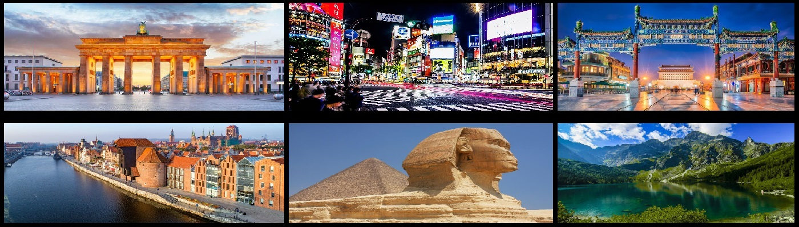

WITAM WSZYSTKICH BARDZO SERDECZNIE!
Jestem osobą, która uwielbia podróżować po świecie.
Oto kilka miejsc, które odwiedziłem:

1. Berlin 2. Tokio 3. Pekin 4. Gdańsk 5. Egipt 6. Zakopane
Dlaczego warto podróżować?
1. Zmienisz siebie - staniesz sie bardziej tolerancyjny i zrozumiały
2. Docenisz swój dom - zrozumiesz, że twój dom i kraj są wyjątkowe na swój sposób, mają coś, czego nie ma w innych krajach.
3. Odkryjesz nową kulturę - trudno podróżować, prawdziwie komunikować się z innymi kulturami, nie ucząc się czegoś nowego. Poznasz wzorce postępowania charakterystyczne dla danego społeczeństwa
4. Poszerzenie swoich horyzontów - największą zaletą podróży jest zrozumienie, że świat jest większy niż nasza niewielka jego część. Podróżując, widzimy, jak żyją inni ludzie.
5. Odkryjesz piękno ziemi - powinieneś podróżować, aby poznać niesamowitą urodę tej ziemi, którą jesteśmy obdarowani. Istnieje tak wiele rodzajów piękna w pustyniach, górach, oceanach i fiordach.